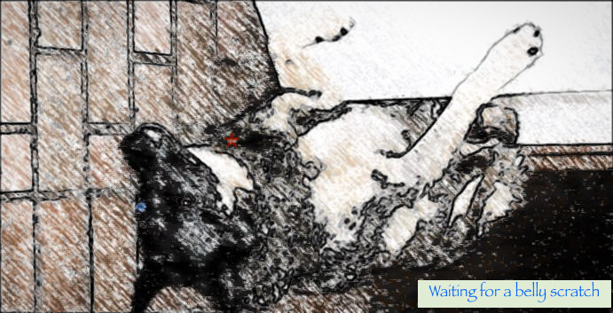
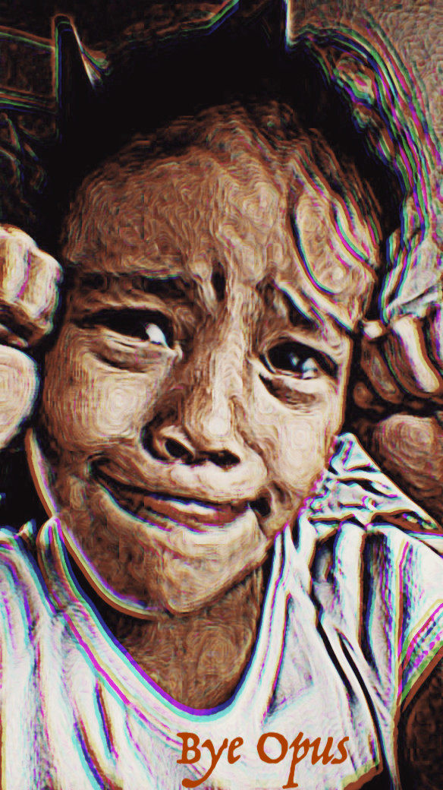

hover for text
One day, Joe and Lisa went to a local animal shelter. Though they already had two cats, Joe and Lisa really wanted a dog also. Inside the shelter, there were many dogs and cats. As they were looking at the animals, Lisa noticed a sweet looking little German shepherd. And the German shepherd was looking right up at Lisa and vigorously wagging its tail
“Well aren’t you a cute little thing,” Lisa said, and then bent down to pet the dog. And as Lisa was gently stroking the puppy’s head, a curious thing happened. The little dog lifted one of its forepaws, and with it began stroking Lisa’s arm. So while Lisa was petting the little dog, the dog was also petting Lisa
“How precious!” Lisa exclaimed, and then she asked Joe to come and see her new friend. And as Joe approached, the little dog looked directly up to him, wagging its tail. Joe then noticed another curious thing about the dog: It had two different colored eyes. One eye was brown and the other eye was blue. And the blue eye sparkled like a gemstone.
“Lisa, look here,” began Joe. “The little pup has a beautiful blue eye.” And as they looked into the dog’s strange and beautiful eye, all of a sudden they both knew what the dog was thinking:
Well of course it took no time for Joe and Lisa to decide that they did wish to be friends with this sweet little dog.
So they went to the owner of the shelter and pointing towards their new friend, Lisa then said,
“We would like this dog. What’s his name?”
And the owner responded,
“Well actually she is a female pup. Her name is Opus.”
So Joe and Lisa took Opus to their home, at which place Opus soon became friends with the two cats, Oscar and Edgar.
In time Opus grew up to be a very beautiful adult dog. And her eye remained like a sparkling gemstone. And she was strong, and intelligent, and gentle. But above all, Opus was good.
Every morning, after breakfast and before going to work at his bookstore in town, Joe would take Opus on a walk. On this day with Opus, the sun was brightly shining, and the late springtime air was warm and smelled like fresh grass and flowers.
Opus was very happy as they made their way down the country road towards the woods beyond. And as Joe watched Opus playfully frisking about, a little song came into his head, which he then began to whistle. And this is how it sounded:
There were many other animals living along the road where Opus and Joe walked. There were chickens and roosters, cows, horses, a few pigs; rabbits and cats, and some other dogs. As Opus passed them by, she was very friendly, sometimes nodding politely, and sometimes even stopping to say hello to an animal.
Soon Joe and Opus reached the woods and began walking along a little trail. As always, when walking through the woods, Opus delighted in all the different smells. And she frequently paused to sniff the ferns, the leaves on the bushes, the little wild flowers, and even the mushrooms on the rotting logs.
Suddenly Opus’s attention was drawn to an even smaller side trail, so overgrown with shrubs that is was barely noticeable. And with her keen nose as her guide, Opus decided to follow the overgrown trail.
Curious about the new direction Opus was taking, Joe followed her, a little distance behind. Soon the trail opened up into a large clearing, and there, Joe saw Opus.
hover for text
But Opus was not alone. Scattered all around her was a large herd of white-tailed deer. Slowly the deer formed a circle around Opus, and it seemed to Joe that they were all looking at her in wonder.
Then, one by one, each of the deer tentatively approached Opus, looking closely into her magical sapphire-blue eye. After each deer had been given the opportunity to inspect Opus’s eye, the deer-circle was reformed.
All together, then, the deer began bobbing their heads, hoisting up their legs, kicking out their hooves, and prancing and cavorting about in a charming deer dance! “How wondrous,” mused Joe as he watched the deer dancing in a circle around his dog. And then, to Joe’s greatly increased wonderment, the deer, in unison, burst into a song! Here is how the deer song sounded:
Trotting back to the little side trail, Opus rejoined Joe, who was understandably quite mystified by what he had just observed, Especially since by some enchantment he could even understand what the deer were singing.
“Well now, Opus” Joe said out loud, “what were you doing with the deer in that clearing?” And looking into Opus’s sparkling blue eye, he was given the answer:
I was making new friends.
And they walked back to their house.
hover for text
Ever since Opus was a pup, she had regularly accompanied Joe to his little bookstore in town. This day with Opus was no different.
At 10 o’clock they arrived at the store and Joe unlocked the door, turned on the lights, and he and Opus entered.
Opus loved the smell of the books, especially those older and leather-bound. And she was allowed to roam among the bookshelves as she wished.
Soon customers began to arrive, each quietly greeting Joe at the front desk with a slight nod, or soft hello.
But the customers who came upon Opus in the store seldom remained quiet. “Oh!” they would exclaim, “what a beautiful dog you are! And what a beautiful blue eye you have! And you’re so well behaved!”
Usually then, these friendly customers would pet Opus’s head and the back of her neck; and often Opus would pet them right back with her forepaw. Then Opus would roll onto her back and soon be given a good belly-scratch.
After that they would often then look at the little star-shaped tag attached to her collar, and say something like: “So your name is Opus. What a nice name!”
Of course all the regular customers knew Opus. And it was from these people that Opus got the most attention, and the longest belly-scratches.
Joe would frequently smile to himself as he watched his customers take such delight in Opus.But he was never surprised by the attention she received, because she was always a very good dog. Well, at least most of the time.
After playing with Opus, customers would typically bring a book or two to Joe at the front desk for purchasing. And then quietly thank him before leaving.

At about four o’clock that day Joe noticed something wrong about the store. Suddenly he realized what it was: Opus was missing!
She must have sneaked out the front door while he was putting some books on shelves in the back.
Joe called Lisa on her cell phone and told her the news.
“Opus sneaked out the front door,” he began, “I think she’s gone on another big adventure.”
And Joe was correct. You see, every once in a while Opus would sneak away on a big adventure, where she would wander through town greeting people and making new friends.
The adventure would continue until someone would see Lisa’s phone number on the back of Opus’s dog tag, and call Lisa to tell her where Opus was.
On one such adventure, a teacher at a local high school had called Lisa. Opus had slipped in through one of the school’s doors, and after briefly roaming the halls, marched into band class right during practice!
Seeing a large, stray dog in their class, the band students and the teacher were initially quite startled. But soon it became clear to all that this was a sweet and very special dog, so Opus had no trouble making friends with them.
And when the students resumed their playing, Opus listened quietly and respectfully. And the teacher was so charmed by Opus’s good behavior that she did not even call Lisa until class was finished.
Another time Lisa was called to a house at which a little girl had made such good friends with Opus that, when Lisa came to take her dog away, the little girl burst into tears!
During another adventure, Opus sneaked into a local Italian restaurant called Luigi's. At Luigi's, Opus made quite a few new friends from both customers and the working staff.
And Luigi even allowed Opus to eat a little plate of spaghetti and meatballs in the front of his restaurant before calling Lisa.
All of these adventures were lots of fun for Opus. But on this day, Opus wanted to go on a really big adventure. So she decided to go to the bowling alley.
hover for text
But this was one adventure Opus went on in which she did not make friends--at least not at first. Because once she was inside and saw all those shiny balls rolling down the smooth, polished alleys, she sped off to play with them.
And one after another she pounced on those rolling bowling balls, knocking each one into the gutter. And since no bowler likes to throw a gutter ball, Opus was not making any new friends.
One man was so upset by his ball being knocked into the gutter that he ran up to Opus, grabbed her by the collar, and shouted into her face:
“You stupid mutt! I was nearly finished working on a perfect game. And you just wrecked it!”
He was very, very angry. Then he noticed that she was quivering, and her ears were folded back. And looking into Opus’s strange blue eye, he could see how sorry she was, and how badly she felt. And then he even thought he heard her say:
I'm sorry to have made you angry. I was just having fun.
After that the man was no longer angry, and was even a little ashamed. “Oh, it’s alright,” he said. “it’s only a game.”
Later that night, while the man was thinking of the marvelous dog that he had met at the bowling alley, a song came into his head. And here is how it sounded:
hover for text
That evening, after Joe, Lisa, Opus and the two cats had dined, Joe decided to take Opus on a night time walk.
The sun had already set, but there was a large, perfectly round full moon out, that cast a pleasant glow on the countryside
Strolling past the neighborhood animals, most of which were asleep, Joe and Opus, for the second time that day, entered the woods.
With Joe a few paces behind, Opus once again decided to take the little side trail that led to the clearing.
When they reached the clearing, Joe decided to stay behind and watch Opus from the edge of the woods. He wondered if maybe the herd of white-tailed deer might return. But they did not.
Instead, however, Joe watched as Opus lifted her head to gaze at the full moon. Opus’s blue eye shone brightly and seemed to throw a purple beam of light all the way to the moon’s glowing surface.
Joe looked in wonder as suddenly a small shadowy form appeared at the far end of the purple hued beam. Then tumbling through the beam’s purple light the form appeared to grow larger and its features more distinct.
Then, when quite near Opus’s upturned face, the form, now appearing very much like a large bear, hopped out of the purple light and onto to the ground in front of Opus.
And indeed it was a bear. A great moon bear with deep, maroon-colored fur, and a copper-and-gold-hued nose that shone like fire in the moonlight. The bear was justifiably very proud of his appearance, especially his beautiful nose.
Joe continued to watch as the bear approached very close to his dog. And then seemed to take a keen interest in, not Opus’s blue eye as the deer had, but in Opus’s nose! (And of her own nose, Joe noted, Opus appeared very proud as well.)
Very gently the bear, with its great furry paw, tilted Opus’s head this way and that, all the while nodding and grunting in obvious approval. And Opus happily allowed the bear as much time as it desired to inspect her nose.
When at length satisfied with his examination, the bear then gently nudged Opus’s head upward until her blue eye once again cast a purple beam to the surface of the moon.
hover for text
The bear then roared into the sky, and soon after several other smaller bear forms tumbled down the beam’s light before hopping out onto the clearing. Observing carefully Joe noticed that the final bear to hop out had a polished brass satchel strapped around it’s neck.
And then each of the smaller golden moon bears in turn stepped up to inspect Opus’s nose. And to Joe they all seemed to admire it as much as the first bear did.
Last to admire Opus’s nose was the bear carrying the mysterious satchel (which Joe thought to be the mama bear) who then slipped the satchel off her neck and laid it on the ground in front of the larger bear (which Joe correctly assumed must be the papa).
The papa bear then inserted a single ebony claw into what appeared to be a lock on the satchel’s front and then twisted the lock-opening clockwise.
Joe looked on as the satchel top then popped open and revealed a row of shimmering tubes that sprang out and swiftly grew into a majestic gold and copper pipe organ with a gleeming black bench and pure alabaster keys.
Taking a seat at the organ the papa bear cleared his deep voice and began to sing. And as the other bears joined in harmony, the papa bear then began to play the organ as well.
And as it was with the deer, some strange force of enchantment enabled Joe to understand the lunar bear song. And this is what Joe heard:
After they had finished, the Papa bear played a mysterious chord and the great organ folded back into the the brass satchel. Then he rolled Opus on her back and as the other bears hooted and clapped, gave her a good moon bear belly-scratch.
The papa bear then rolled Opus upright, and each of the other bears ambled up and gave her a gentle nose kiss.
Opus then raised her eye again to the moon, and all the bears hopped back into the light’s purple beam and were swiftly pulled back to their lunar home.
Opus then met up with Joe again, and they commenced their return walk through the woods.
After exiting the woods, and when they were once more bathed in soft, golden moonlight, Joe stopped to ask Opus a question:
“How is it, Opus, that such marvelous things occur in that clearing?”
And as he awaited her response, Opus winked her blue eye, and gave Joe his answer:
Magic.
Back home Lisa had made a fire, and there, in front of the small country hearth, she sat with Opus and the two cats. Opus had her own little bed and lay on it, very tired. It had been another good day for Opus, a day she had enjoyed very much; a day she had made new friends.
Joe decided, as he often did at night, to play some peaceful music on the piano for his resting family to enjoy.
Then closing her eyes and filled with the peace and the happiness that all good creatures deserve, Opus listened to this song before going to sleep.